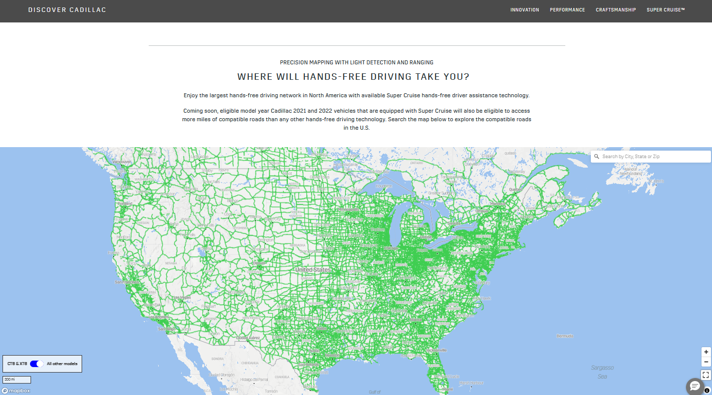
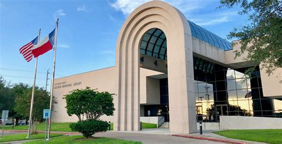

My Work Available on the Internet
Eric W Brockwell
Geogapher | Diplomat
Most of my hands-on work as well as the work of teams I've managed is private/proprietary and behind firewalls. In other cases, the work was built for web browsers between 2002 and 2013 and has been superseded by newer tech stacks after my departure.
What you can see ...
Cadillac Super Cruise Map Viewer
I co-developed the original proof of concept for the map viewer 2/3rd of the way down the page using open source Minnesota Map Server, ESRI map service backgrounds, and shapefiles. I helped bootstrap a team of great developers in Limerick, Ireland, to build it out and harden it for production. They worked out how to conform to Cadillac's strict Style Guide and took it much further. Later, I led a team of developers split between Detroit, Austin, and Atlanta in keeping the data up to date and refactoring the site to allow for easy adaptation to Buick and Chevrolet Style Guides.
US Patent
What if you could listen to a map? Co-published with 3 really cool former colleagues from GM.
Awareness System for Experiencing an Environment Through MusicGeorge Memorial Library
In a previous life [as in ... before AutoCAD] I worked for the Architect who designed this library in Fort Bend County, TX. I finally visited it for the first time in 2011. I hand rendered several of the elevations from the architect's floor plans and applied text via hand drafted lettering, rub-on transfers, and Keuffel & Esser's Leroy ink lettering system for most of the sheets.

 You will not find me on X, Facebook, Instagram, etc.
You will not find me on X, Facebook, Instagram, etc.